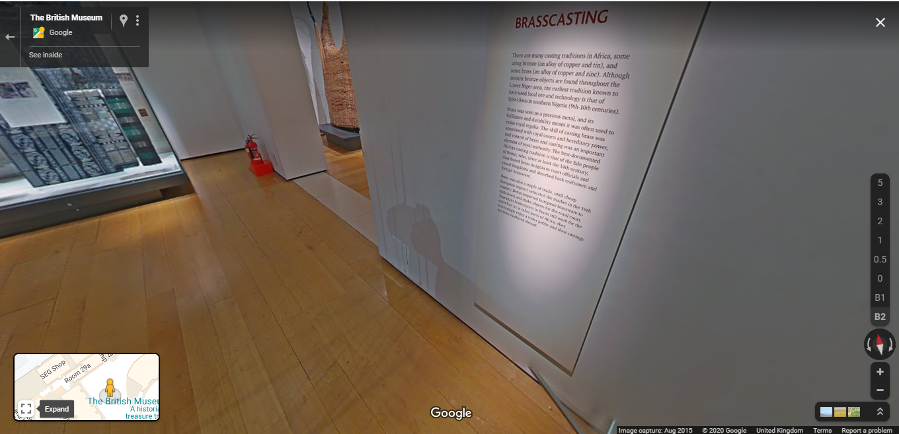

This week’s trip was a virtual visit to The British museum, a museum located in London. Ordinarily this trip would be done in person and whilst it still can be as the museum is open to visitors, the virtual tour is a safer, novel experience due to the current situation. As someone who normally conducts visits to museums and other such cultural institutions in person, this was quite a surreal experience!
Google maps enables visitors to virtually tour the museum using the selection of 360° images and navigation tools to move around the room. With this tour visitors can even select which part of the museum they would like to visit.
Though an interesting experience,difficulties did arise when trying to view certain parts of the exhibit in detail. For instance, as the tour is a series of pictures and isn't truly interactive, it can be hard to view some of the information panels to read what the exhibit is showing and where the collections are from. This becomes a greater problem when trying to view those that are encased in glass as the reflection paired with the inability to zoom in completely on a panel is a slight problem. I can imagine this would be a problem, especially for a first time visitor trying to learn more about a specific collection.
Despite this, virtual tours are a fun way of still being able to visit the museum without actually visiting the museum.